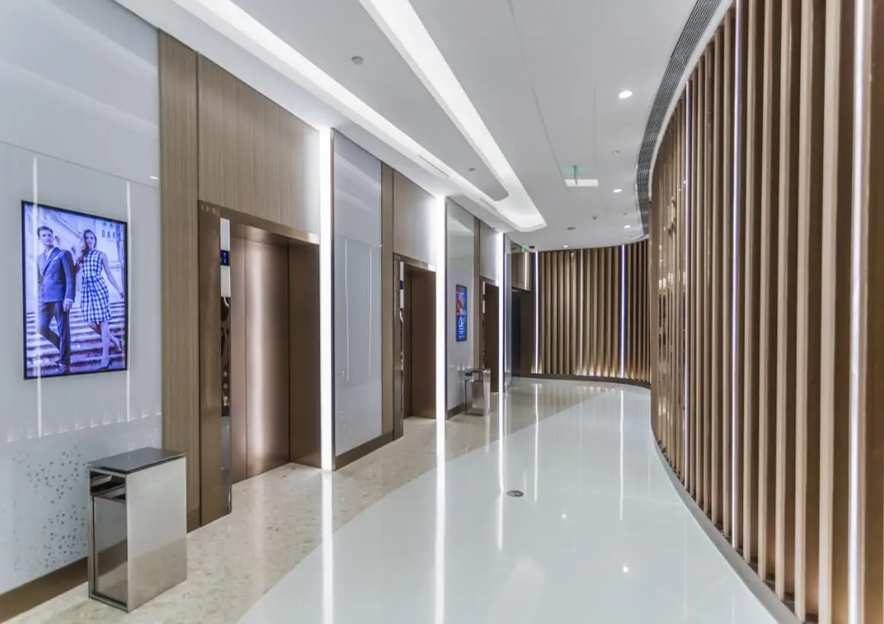
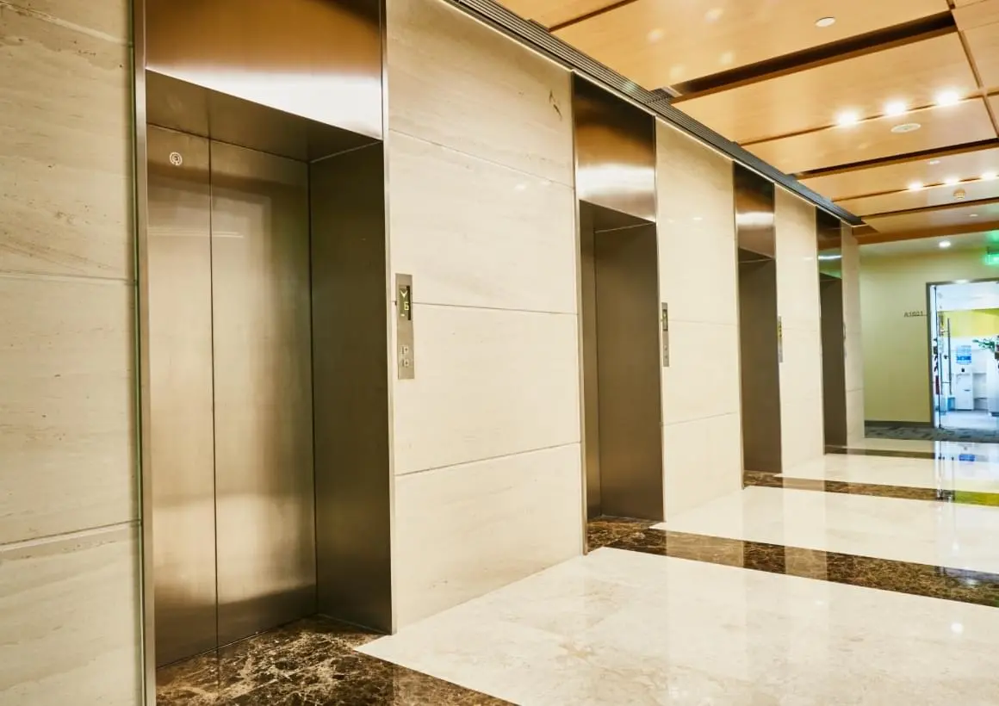

О компании
Sanyo Elevator Co. Ltd входит в группу компаний Sanyo Heavy Industry Group, и является одним из самых известных производителей лифтов и эскалаторов. Компания основана в 1954 году.
Sanyo Elevator Co., Ltd строго следит за соблюдением государственных стандартов при производстве и постоянно инвестирует в научно-исследовательские работы и обновление производственных мощностей, благодаря чему качество выпускаемой продукции находится на самом высоком уровне.

Сертификация качества
Компания успешно прошла сертификацию систем менеджмента качества,
экологического менеджмента и менеджмента охраны здоровья и
обеспечения безопасности труда. Получены сертификаты соответствия
Евразийского экономического союза и Европейского союза на всю
выпускаемую продукцию. Стандарты безопасности Sanyo Elevator Co., Ltd
более строгие, чем национальные стандарты безопасности лифтов Японии
и Европейского союза.

Компания дистрибьютер
ООО «Рентал инжиниринг» является региональным дистрибьютером Sanyo
в Российской Федерации и Республике Беларусь. Все лифты, эскалаторы
и траволаторы, производства Sanyo имеют сертификаты соответствия
Евразийского экономического союза. Специалисты ООО «Рентал
инжиниринг» имеют большой опыт продаж и установки лифтов и
эскалаторов в различных условиях, и всегда помогут Вам подобрать
оптимальный вариант оборудования для Ваших условий.